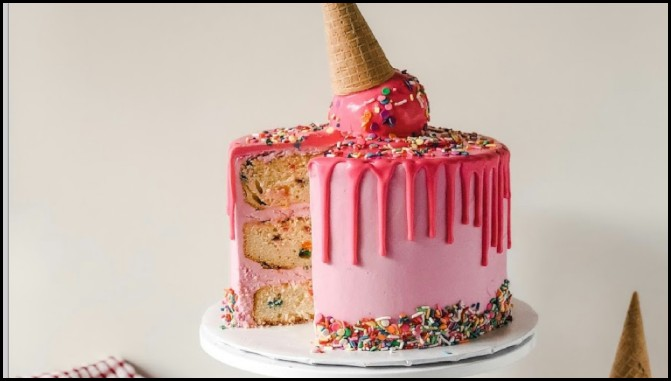

Pasteles para Eventos
En Delicias Dulces elaboramos pasteles personalizados para bodas, cumpleaños y celebraciones especiales. Trabajamos con ingredientes frescos, decoraciones artesanales y diseños únicos para cada ocasión. Ofrecemos entregas a domicilio en toda el Área Metropolitana.
Volver al menú
